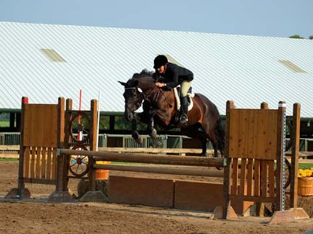
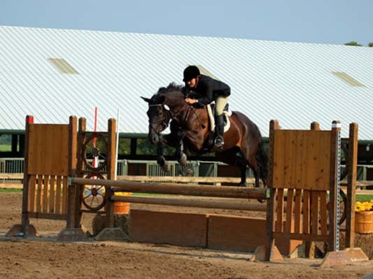
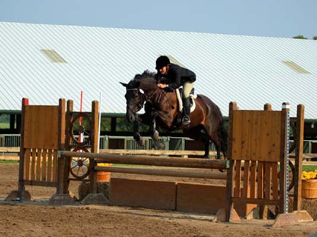
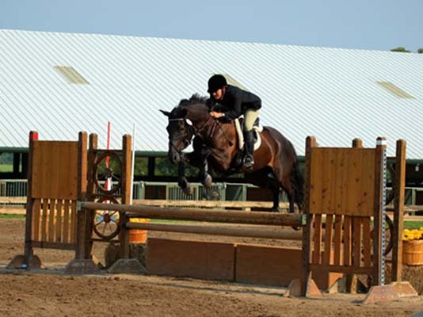

  
 | In March 2014, one of Lynda's bucket list items was realized! Four month old purebred German Shepherd pup, Image Vom Iron Cross (aka Gemma), came home to be a part of our family! | |
| In November 2010 we became foster parents to Niko for Border Collie Rescue of Texas. She's approximately 2 years old and was rescued with 20+ other Border Collies. Though socialized with dogs, she's having to learn to socialize with people. She plays hard with Bess and Jack and loves to fetch and retrieve her football toy and doesn't have a preference as to who throws it! She is such a great addition to our family and we just love her to pieces! Don has dubbed her the "Couch Princess". The happy dogs in late February. | |
| Bess 10/15/00 - Jack 12/5/04 Bess and Jack's painting by Marsha McDonald (www.marshamcdonald.com) | |
| Clickhere for video of the dogs at play | |
| | *Jack* at 6 months old, ABC registered, red and white Border Collie!� Jack fits in nicely here at Lyndon Acres and is an equal to Bess when it comes to energy!� |
| | |
| Jack testing his herding instincts under the watchful, talented eye of Jimmy Walker of Hillsboro | |
| | |
| | Jack and his Xmas present: a humunga tongue |
| | Shiloh, Jack and Bess Jack adds a bit of color to our previously black and white dog world! |
| | |
| | |
| | |
 |
| www.usdaa.com�- United States Dog Agility Association, Inc. www.bordercollies.com |
| Pamela with Libby | |
| Pamela is also an agility judge.� She judges around the country and has trained many dogs to agility championships.� She and her husband Jason also breed Australian Shepherds.� She can be reached at bonfire5@swbell.net or 817-572-0795. | |
| � Shiloh 3/2/94-12/11/05 Loyal and loving companion and family member of Don, Lynda, Bess and Jack Our loss is immeasurable; Until we meet again. . . | |